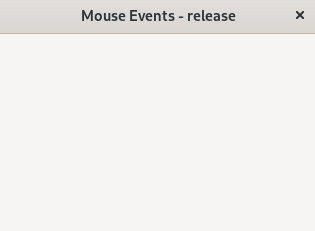

マウスのボタンを離したときの動作を指定します。
ここではマウスのボタンごとにsignal_handlerを指定せずに、イベントが発生したときにどのボタンが押されたかを判定します。
| get_current_button() | |
|---|---|
| 返値 | 意味 |
| GDK_BUTTON_PRIMARY | 左ボタン |
| GDK_BUTTON_MIDDLE | スクロールボタン |
| GDK_BUTTON_SECONDARY | 右ボタン |
| signal_handlerの引数 | |
|---|---|
| 書式 | 意味 |
| int n_press | 1:シングルクリック 2:ダブルクリック 3:トリプルクリック |
| double x | マウスのｘ座標 |
| double y | マウスのｙ座標 |
update:2025/1/2
#include <gtkmm.h>
#include <iostream>
class MyWindow : public Gtk::Window
{
public:
MyWindow();
virtual ~MyWindow() = default;
private:
// Signal handlers:
void on_mouse_released(int n_press, double x, double y);
Glib::RefPtr<Gtk::GestureClick> m_window_click;
};
namespace {
std::map<unsigned int, Glib::ustring> mouse_buttons {
{ 0, "No button"},
{ GDK_BUTTON_PRIMARY, "Left " },
{ GDK_BUTTON_MIDDLE, "Middle" },
{ GDK_BUTTON_SECONDARY, "Right " },
};
}
MyWindow::MyWindow()
{
set_title( "Mouse Events - release" );
set_default_size( 320, 240 );
m_window_click = Gtk::GestureClick::create();
m_window_click->set_button( 0 ); // ※ All mouse buttons
m_window_click->signal_released().connect(
sigc::mem_fun( *this, &MyWindow::on_mouse_released ));
add_controller( m_window_click );
}
void MyWindow::on_mouse_released(int n_press, double x, double y)
{
const auto current_button = mouse_buttons[m_window_click->get_current_button()];
std::cout << "Mouse released : " << current_button
<< ", " << n_press << ", " << (int)x << ", " << (int)y << std::endl;
}
int main(int argc, char* argv[])
{
auto app = Gtk::Application::create( "gtkmm4.example" );
return app->make_window_and_run<MyWindow>( argc, argv );
}
| Mouse event | |
|---|---|
| Console | Window |
|
$ Mouse released : Left , 1, 99, 122 $ Mouse released : Right , 1, 99, 122 $ Mouse released : Middle, 1, 99, 122 $ Mouse released : Left , 2, 99, 122 $ Mouse released : Left , 3, 99, 122 |
 |